Twenty Countries Listen. Four of Them Pay.
One Afrobeats single is certified in more than twenty countries — 5 million units in the United States, 1.56 million in India, Diamond in Poland, number one in the Netherlands. African music is heard almost everywhere. It is paid for in about four places, and that gap is the whole story.
Section 01The Short Version
Our previous report established that the money behind African music is abroad. This one asks the obvious follow-up: abroad where? The answer turns out to depend on which question you are actually asking, and the four sensible questions give four different league tables.
- African music is heard in at least twenty-two countries outside Africa at certified scale. One song — Rema’s “Calm Down”, ~1.89bn streams — is certified from 5 million units in the United States and 1.8 million in the UK to 1.56 million in India, Diamond in Poland, Canada, France and Brazil, and Platinum across Germany, Italy, Spain, Australia, New Zealand, Portugal, Belgium, Switzerland, Denmark, Norway, the Netherlands and Austria.
- It has been number one in eight countries — the Netherlands, Belgium, Switzerland, Portugal, Luxembourg, Canada, South Africa and on Romanian airplay — and number one on Billboard’s Global Excl. US chart.
- India is the third-largest market by certified units, ahead of Canada, Germany and France. Poland went Diamond. Neither has an African migration story to explain it.
- By new listeners, the top five are the United States, Brazil, France, the United Kingdom and Germany — in that order — on Spotify’s 2025 ranking of where Afrobeats gained the most new listeners. Nigeria is sixth (Spotify via MP3Bullet). Afrobeats listeners grew 22% globally in a year (Spotify Wrapped 2025).
- By money, the order changes completely. Estimated per-stream payouts run from about $0.0080 in Iceland and $0.0078 in Norway down to $0.0010 in Brazil and $0.0008 in India (Chartlex). Britain, at about $0.0044, leads the big markets.
- One British stream is worth about 4.4 Brazilian ones. That is the single most useful number in this report. Brazil ranks second by listeners and roughly eleventh by what those listeners are worth.
- By diaspora, the map moves again. Of the 20.7 million Africans living outside Africa, Europe holds about 11 million, Asia including the Gulf about 6.9 million and Northern America only about 2.7 million.
- The Gulf is the blind spot. Nearly seven million Africans live in Asia and the Gulf, and that region is almost entirely absent from the African-music economy — no major festival circuit, no chart, no meaningful payout tier.
- By live revenue, it is Britain first and it is not close. A UK stadium (60,000), a UK arena that sold out in twelve minutes, a Portuguese beach festival drawing 40,000 people from 180 countries, and Madison Square Garden.
- The growth frontier pays badly. Indonesia (+4,530%), India (+1,650%), Brazil (+500%) and Latin America (+400%) are the fastest-growing markets for African music — and every single one of them is a bottom-tier payout market.
If you want the one-line version: the countries that listen to African music and the countries that pay for it are two different lists, and the gap between them is the whole story.
Section 02Four Questions, Four Maps
“Which countries support African music?” sounds like one question. It is four, and they have genuinely different answers:
- Who listens? Raw audience. This is the number that gets quoted in press releases and it is the least connected to income.
- Who pays? Payout per stream, which is set by that country’s subscription price and premium penetration — not by how much anyone there loves the music.
- Who shows up? The live circuit. Where the diaspora is dense enough, and rich enough, to fill a room at Western ticket prices.
- Who is actually there? Where Africans abroad live — which is not the same as where the industry has built anything.
Confusing these four is the most common and most expensive mistake in African music commentary. A country can be first on one list and eleventh on another. The rest of this report takes them one at a time, then puts them back together.
Section 03Where It Is Actually Heard
Start with the question you actually asked: where is African music listened to? Streaming platforms do not publish country-level listener counts, so the honest way to answer it is with the one measure that is audited and published country by country — industry certifications.
We use Rema’s “Calm Down” as the measuring stick. It is the most globally successful African song ever recorded — roughly 1.89 billion streams worldwide — and it is certified in more than twenty countries. Every number below was independently verified by a national industry body.
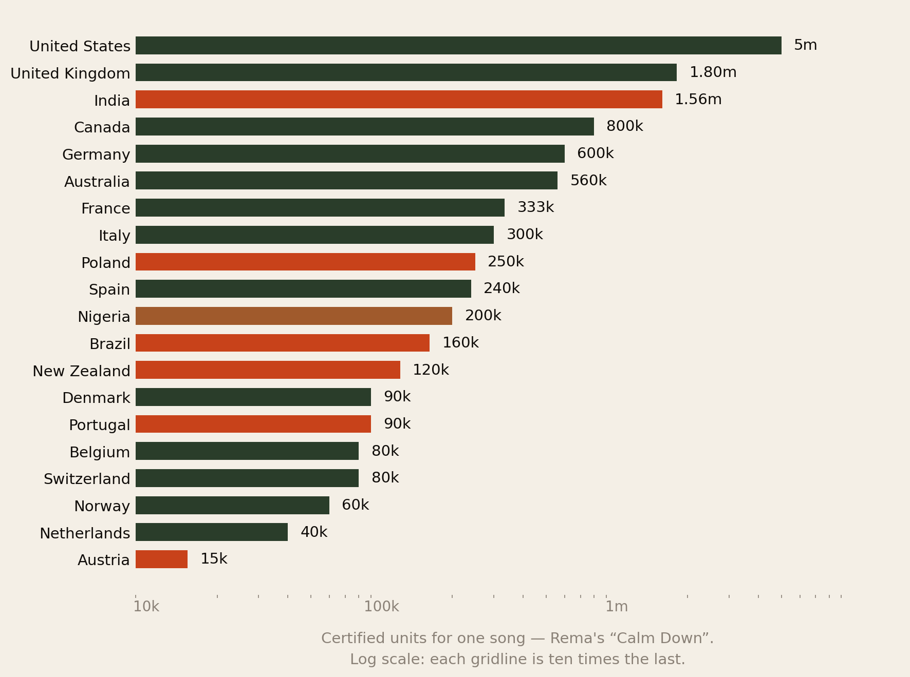
Read down that list and the answer to “where is African music listened to?” stops being the UK and America and becomes something much wider:
- The United States is first at 5 million certified units, and the United Kingdom second at 1.8 million. No surprise so far.
- India is third — 1.56 million units, certified 13× Platinum. It is ahead of Canada, Germany, France, Italy and Spain. Almost nobody discussing Afrobeats markets mentions India.
- Continental Europe is thick with it. Germany 600k, France 333k, Italy 300k, Spain 240k, plus Belgium, Switzerland, Austria, Denmark, Norway, the Netherlands and Portugal.
- Poland took Diamond at 250,000 units — more than Spain, more than Nigeria.
- Australia and New Zealand together account for 680,000 units. The Pacific is a real African-music market and it appears in none of the usual commentary.
- Nigeria is eleventh at 200,000 units — below Poland, above Brazil. The country that made the song certifies a twenty-fifth of what America does.
African music is not heard in a handful of diaspora capitals. On the evidence of the biggest African song ever made, it is heard in at least twenty-two countries across five continents — and the third-largest of them is India.
Two honest caveats before you over-read this. Certification thresholds differ between countries, so units are a measure of absolute consumption, not of how popular the song was relative to that country’s size — 40,000 units in the Netherlands is a far higher per-head figure than 250,000 in Poland. And this is one song, whose remix featured Selena Gomez, which certainly inflated the American, Canadian and Australian numbers. See Method & Limits.
Section 04The Places Nobody Expects
Certified volume is one signal. Reaching number one is a different and in some ways better one, because it measures a song beating everything else in that country in the same week — a like-for-like contest against the local market.
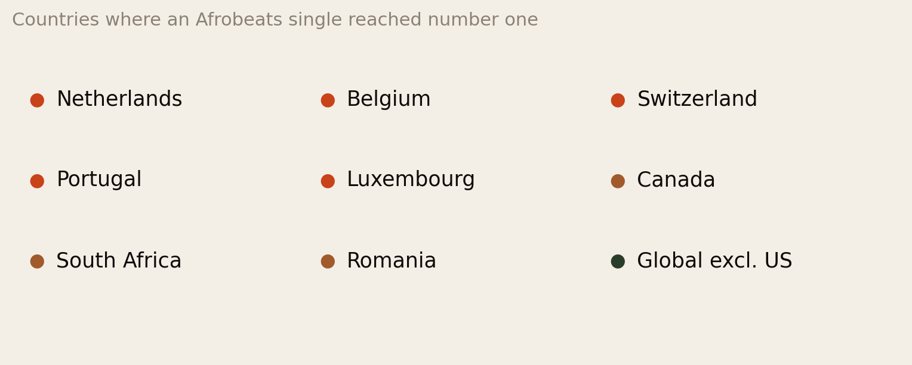
An African song has topped the national chart in the Netherlands, Belgium, Switzerland, Portugal, Luxembourg, Canada and South Africa, led Romanian airplay, and reached number one on Billboard’s Global Excl. US chart — which is to say it was, for a period, the biggest song in the world outside America.
It reached number two in France and number two in Lebanon. It went Gold in Chile on 10 million streams and Platinum in Greece on 2 million. These are not diaspora markets in any meaningful sense. There is no significant Nigerian community in Bucharest or Santiago.
That matters for how you think about the whole question. The story of the last decade was the diaspora carried African music abroad, and that is true. But the evidence here shows a second stage that has already happened: the music has detached from the diaspora and is now travelling on its own. Poland, Romania, Chile, Greece, India, Indonesia and Thailand have no African migration story to explain their numbers. They just liked the song.
The Netherlands is the sharpest illustration of why a listening map and a revenue map are different documents. It is a number one country — the song topped both Dutch charts — and it sits at the bottom of Fig 1 on certified units, because it is a small country. Popular, not large. Both facts are true and they answer different questions.
Section 05Where the New Listeners Are Coming From
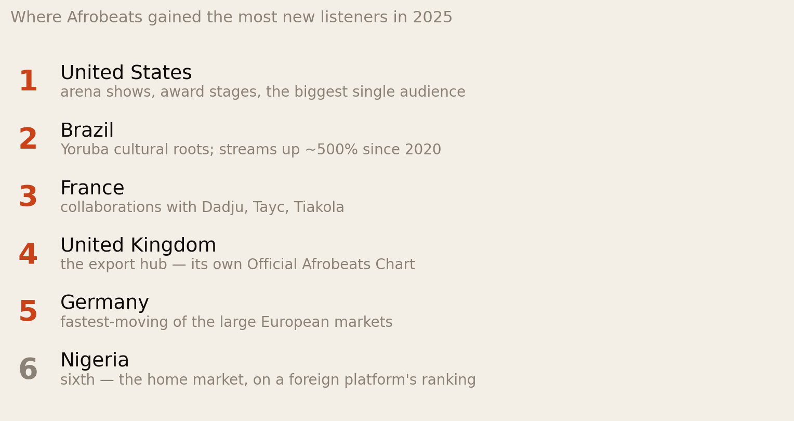
The United States leads — the largest single audience, the arena circuit, the award infrastructure. Brazil is second, and that is the genuinely surprising entry: a country with deep Yoruba cultural roots, no significant recent African migration, and Afrobeats streams up roughly 500% since 2020. France is third, driven by a steady traffic of collaborations with Dadju, Tayc and Tiakola, and by the largest African-descended population in continental Europe. Britain is fourth. Germany is fifth.
Note what is not here. No Gulf state. No Canada. No Netherlands. And Nigeria — the country that makes the music — is sixth on a ranking of where its own genre is finding new ears.
Britain sitting fourth deserves a caveat that runs the other way. The UK is not a growth market for Afrobeats in the way Brazil is, because it converted years ago. It has had its own weekly Official Afrobeats Chart since July 2020. Growth rankings systematically flatter new markets and understate mature ones, which is exactly why you cannot read this chart as a support ranking.
Section 06Where the Money Is
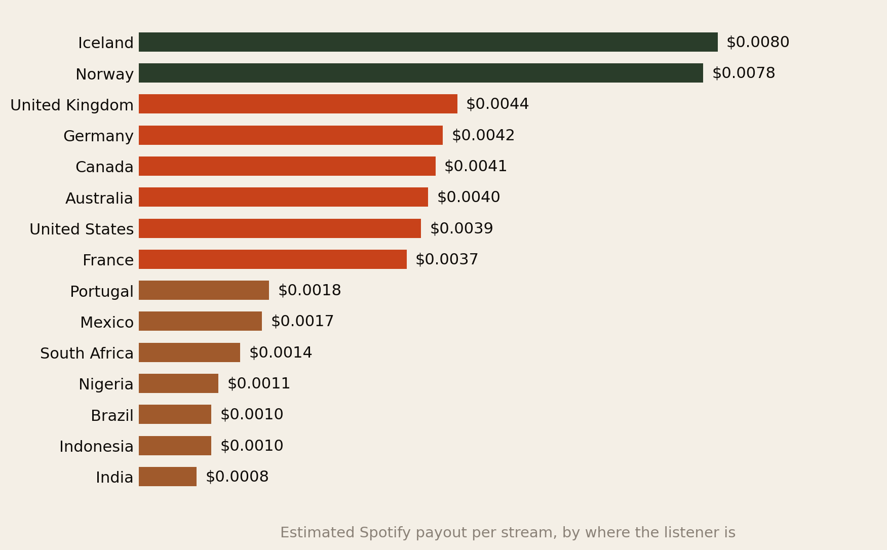
This is the ranking that decides who eats. It is set by two things, neither of which is cultural: what a subscription costs in that country, and what share of listeners pay for one rather than using the free tier.
Three things stand out.
- Britain leads the major markets at about $0.0044 — ahead of Germany, Canada, Australia, the United States and France. The US has the bigger audience; the UK has the better rate.
- The Nordics are in a league of their own. Iceland and Norway pay roughly twice what Britain pays and about eight times what Brazil pays. They are tiny markets that behave like large ones because almost everyone in them subscribes.
- The entire bottom of the table is where the growth is. Brazil, Indonesia and India — the three fastest-expanding audiences for African music — sit at $0.0010, $0.0010 and $0.0008.
These are estimates, and it matters that you know that. Spotify does not publish per-country rates. See Method & Limits, where we also correct a figure we published three days ago.
Section 07The Exchange Rate Between Countries
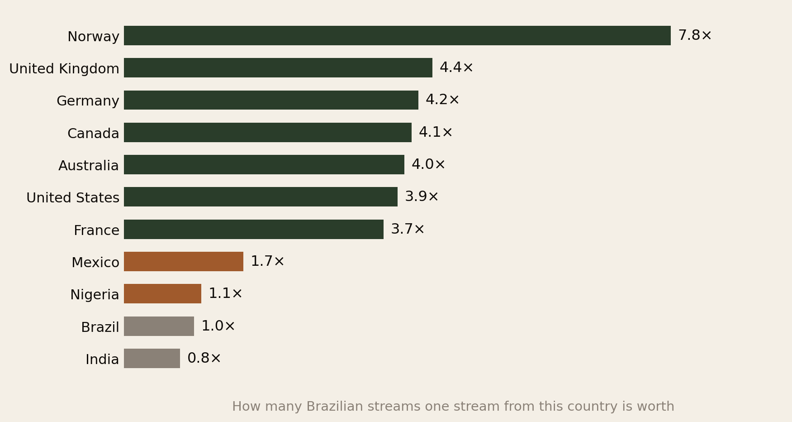
Divide any country’s rate by Brazil’s and you get something more useful than a decimal with four zeros in it: a currency conversion between audiences.
One Norwegian stream is worth 7.8 Brazilian ones. One British stream is worth 4.4. An artist with a million Brazilian streams and 230,000 British ones is earning roughly the same amount from each — and will spend the whole year being congratulated about Brazil.
A million streams is not a fact about your income. It is a fact about your fame. The invoice depends on which passports those listeners hold.
This is also the honest way to read a Spotify for Artists dashboard. The map of listener countries is not a map of revenue; it is a map that has to be weighted before it means anything. Very few artists do the weighting.
Section 08The Two Leagues
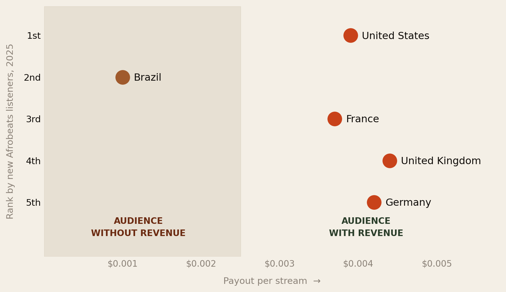
Put the two rankings on one chart and the structure of the whole export market appears. Four of the top five markets — the US, France, the UK and Germany — are clustered tightly between $0.0037 and $0.0044. They are, financially, near-interchangeable. Brazil sits by itself at a quarter of the rate.
The tight cluster is worth pausing on, because it has a strategic implication that runs against instinct. If the US, UK, France and Germany all pay within about 15% of each other, then choosing between them on royalty rate is pointless. You should choose on everything else: which one has the diaspora density to fill a venue, which one has the radio and playlist infrastructure, which one gives you a visa. The money is a wash; the platform is not.
And Brazil’s position is not a criticism of Brazil. Brazilian listeners are not paying less because they care less — they are paying less because Spotify charges them less, for entirely defensible reasons of purchasing power. The problem is not Brazilian fans. It is that an artist reading a stream count cannot see the difference, and nothing in the interface tells them.
Section 09Where the Diaspora Actually Lives
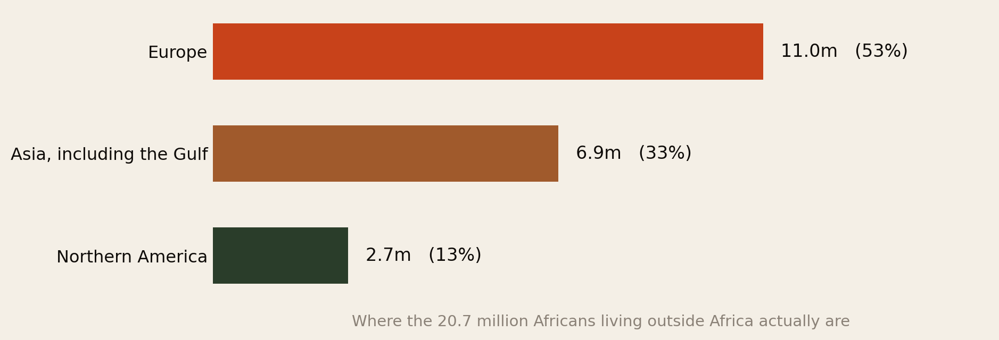
Now overlay the people. Europe holds more than half of the African diaspora — roughly 11 million against Northern America’s 2.7 million. The American cultural dominance of Afrobeats discourse is not proportionate to how many Africans actually live in America.
This explains several things at once. It explains why Britain and France punch so hard: high payout rates and dense African populations in the same cities. It explains why Afro Nation is in Portugal rather than Florida — it is a European festival serving a European diaspora that can drive or take a budget flight to the Algarve. And it explains why Germany, fifth by listeners, is the market most people underrate.
Nearly seven million Africans live in Asia and the Gulf. There is no Gulf Afrobeats chart, no Gulf festival circuit, and no Gulf entry anywhere in the payout tables. That is the largest unserved African music audience in the world.
We flag this carefully rather than overclaim it. Gulf states are largely low-payout streaming markets with restrictive live-events regimes and a migrant population on temporary contracts with limited discretionary income. There are real reasons the industry has not gone there. But “there are reasons” and “there is no opportunity” are different statements, and a third of the diaspora is currently being served by neither the recorded nor the live economy.
Section 10Which Africans Are Abroad
Regions are too coarse to act on. If you are routing a tour or building an audience, what you need is which African nationalities are where — because the diaspora is not one audience, it is dozens of national ones with different music, different languages and different cities.
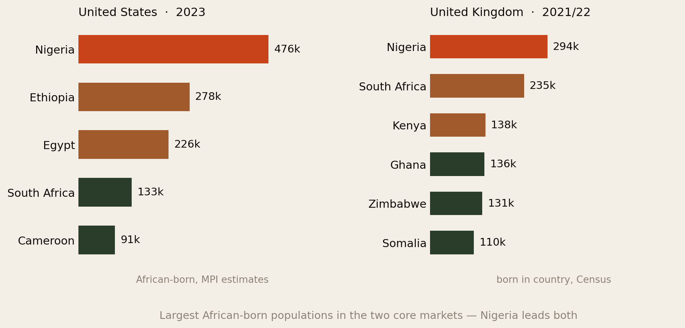
Nigeria leads both markets, and by a wide margin in America — about 476,000 Nigerian-born people in the US against 294,000 in the UK. Roughly 2.8 million African-born people live in the United States in total, of whom about 2.5 million are from sub-Saharan Africa; Nigeria, Ethiopia, Egypt, Cameroon and South Africa together account for nearly half.
The two lists are strikingly different below the top, and that difference is colonial history rather than anything musical. Britain holds large South African, Kenyan, Ghanaian, Zimbabwean and Somali populations. America holds large Ethiopian, Egyptian and Cameroonian ones. An Ethiopian artist and a Ghanaian artist do not have the same map, and neither should route the same tour.
This is also the simplest explanation for why Afrobeats specifically — a Nigerian and Ghanaian sound — travelled the way it did. The two largest African-born national groups in the two highest-paying music markets on earth are Nigerians in America and Nigerians in Britain. The genre had a built-in first audience in exactly the right two countries.
The number that is always too small
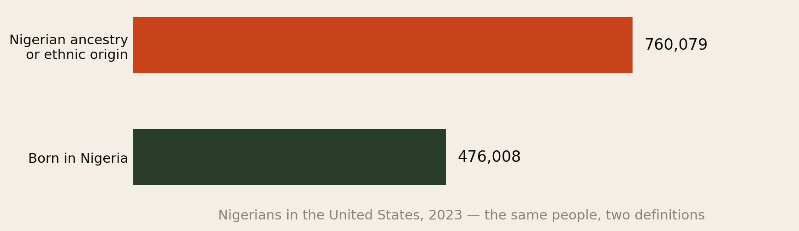
Every diaspora figure in this report, and in almost every report anywhere, counts the foreign-born. In 2023 there were about 476,000 people born in Nigeria living in the United States — and about 760,000 people of Nigerian ancestry. The second number is 60% larger, and the gap is entirely children and grandchildren born in America.
The audience is always bigger than the migration statistics say. If you plan around migrant-stock data, you are planning for about two-thirds of the people who actually turn up.
Apply that correction across Fig 7 and the 20.7 million becomes something considerably larger — and that is before the historic diaspora, the tens of millions of descendants of the transatlantic slave trade, who are not migrants, appear in no migration dataset at all, and are a very large part of why Afrobeats works in Atlanta, London, Salvador and Kingston. We have not put a number on that because there is no defensible one, but its absence from every chart in this report is the single biggest thing those charts get wrong.
Section 11The Live Circuit
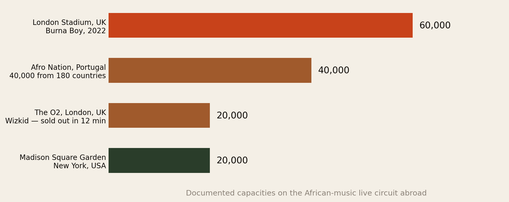
If streaming is where support is measured badly, live is where it is measured honestly. Nobody divides your gate receipts by a national ARPU. A ticket is a ticket.
On this ranking Britain is first and it is not close. Burna Boy became the first African artist to sell out a UK stadium, playing to 60,000 at London Stadium. Wizkid sold out the 20,000-capacity O2 in twelve minutes. The UK has both the venues and the density.
Portugal is the anomaly and the most interesting case in this report. It has a modest payout rate ($0.0018), a small domestic African population, and hosts the largest Afrobeats festival on earth: Afro Nation in Portimão draws over 40,000 people from 180 countries. Portugal is not supporting African music with its own consumers. It is supporting it by being a place other countries’ diasporas can affordably fly to. That is a real and underrated form of support, and it is invisible in every streaming statistic.
The United States contributes the prestige tier — Madison Square Garden, the award ceremonies, the label deals. The 2026 tour routing of major African artists tells the same story as the data: London, New York, Toronto, Houston, Atlanta, Paris, Amsterdam. It is a map of the diaspora with a Portuguese beach attached.
Section 12The Growth Frontier
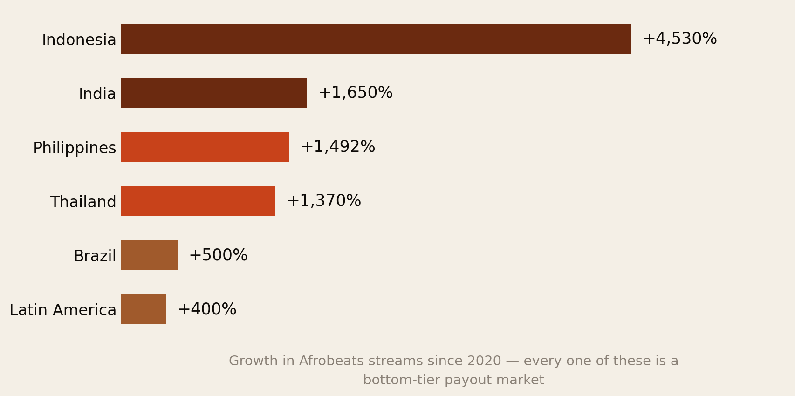
Indonesia is up 4,530% over five years. India 1,650%, the Philippines 1,492%, Thailand 1,370%. Brazil is up 500% and Latin America as a region more than 400% since 2020, with 183% year-on-year growth in 2025 alone. User-made playlists tagged “Afrobeats” grew 135% between 2020 and 2025, and Hot Hits Naija, African Heat and Gbedu are the top three entry points for young listeners worldwide.
Note that the Asian bloc is now four countries deep, not one. Indonesia, India, the Philippines and Thailand are all growing at four figures. Set that beside Fig 1 — where India already ranks third by certified units — and Asia stops looking like a curiosity and starts looking like the second front.
This is genuinely thrilling and financially modest, and both halves of that sentence are true. Indonesia, India and Brazil pay $0.0010, $0.0008 and $0.0010 respectively. The frontier is expanding into precisely the countries that pay the least.
Which is not an argument against the frontier. It is an argument for reading it correctly. Cultural reach and revenue are on different clocks: reach arrives first, and revenue arrives years later if and when those markets convert to paid subscriptions. Brazil in 2026 looks a lot like where Britain was with Afrobeats around 2015. The difference is that Britain then converted, because British listeners could afford £10 a month.
Section 13The Scorecard
Putting the four maps together gives four distinct kinds of country. This grouping is ours, not anyone’s official ranking — but every column in it is sourced.
| Tier | Countries | What they give | What they lack |
|---|---|---|---|
| 1. The core | United Kingdom, United States, France, Germany | High payout rate, large audience, dense diaspora, working live circuit. All four in the top five for growth. | Nothing structural. These are the markets to win. |
| 2. Pays well, under-built | Canada, Australia, Netherlands, Ireland, Norway, Denmark, Sweden, Iceland | Payout rates at or above the core — the Nordics roughly double it. Canada and the Netherlands have real diaspora density. | Little dedicated infrastructure: few festivals, no charts, thin promoter networks. |
| 3. Audience without revenue | Brazil, Indonesia, India, Mexico, Latin America broadly | The growth. Enormous, fast, culturally genuine, and the future of the genre’s reach. | Payout rates one-quarter to one-fifth of the core. Revenue lags reach by years. |
| 4. Diaspora without an economy | The Gulf states, and much of Asia | Roughly 6.9 million Africans — a third of the entire diaspora. | Everything else. No chart, no circuit, no payout tier, minimal discretionary income. |
The single most valuable observation in that table is that tier 2 is underexploited. Canada, the Netherlands, Australia and the Nordics pay as well as or better than the core markets and have almost no dedicated African-music infrastructure. That is not a gap in the audience. It is a gap in the promoters, the playlists and the touring routes — which is a fixable, commercial problem rather than an economic one.
Section 14If You Are an Artist
- Weight your dashboard before you read it. Multiply your listener counts by roughly the Fig 5 factors. Your top revenue country is frequently not your top listener country, and it is usually the UK, the US or Germany.
- Do not pick between the US, UK, France and Germany on royalty rate. They pay within about 15% of each other. Pick on visa access, promoter relationships, diaspora density and touring economics.
- Route tours through tier 2. Toronto, Amsterdam, Sydney, Oslo, Dublin. High-paying markets with real African populations and almost no competition for the audience’s attention.
- Treat frontier growth as marketing, not revenue. Indonesia at +4,530% is a superb story to tell a label. It is not a budget line.
- Britain is the highest-leverage single market on earth for African music. Best rate among the majors, an Official Afrobeats Chart, stadium-scale live capacity, and a dense diaspora. If you can only build one foreign market properly, build that one.
- Register your publishing in the territories that pay. A UK or German stream that is not correctly registered pays nothing at 4.4× nothing.
Section 15If You Are a Fan, Promoter or Investor
- Where you stream from matters more than how much you stream. If you are a Nigerian in Oslo streaming on a Norwegian account, you are worth roughly 7.8 Brazilian listeners to the artists you love. Your address is doing the work.
- Upgrade off the free tier if you are in a tier 1 or 2 country. The pool an artist is paid from is built from subscription revenue in your country. In a high-ARPU market, converting is the single highest-leverage thing a fan can do.
- A ticket still beats everything. One £60 show delivers more to an artist than hundreds of thousands of streams from a low-rate market.
- Promoters: tier 2 is the opening. Canada, the Netherlands, Australia and the Nordics have the payment power and the population, and nobody is systematically serving them.
- Investors: the gap is infrastructure, not talent. Portugal proves a country can become a major node in this economy without a large domestic African population or a high payout rate — purely by building the venue and the routing. That is a business, and it is replicable.
Section 16The Uncomfortable Part
Three things this data says that the celebration around African music tends not to.
First, “support” is mostly a function of a country’s wealth, not its affection. Norway is not eight times more enthusiastic about Afrobeats than Brazil. It is eight times richer per subscriber. Almost everything in this report is a purchasing-power story wearing a cultural costume, and it is worth resisting the temptation to read affection into any of these rankings.
Second, the concentration is a risk. Four countries — the UK, US, France and Germany — carry a hugely disproportionate share of the revenue attached to African music. Any genre whose income depends on remaining fashionable in four Western markets is exposed in a way that a genre with a paying domestic market is not.
Third, and least comfortable: the diaspora’s value here is partly a function of having emigrated. The same person is worth 4.4 times more to a Nigerian artist in London than in Lagos. That is not a moral fact and nobody should feel good about it, but it is the mechanism, and pretending otherwise leads artists to make bad decisions about where to spend their effort.
The fix is not for Africans abroad to stream harder. It is for African markets to become places where a subscription is affordable and a royalty is collectable. Everything else is a workaround.
Section 17Method & Limits
This report assembles published streaming, royalty and migration figures as at 15 August 2026, read for what they say about which countries outside Africa materially support African music.
- A correction to our own previous report. On 12 August we published The Music Is African. The Money Is Abroad. using a figure of roughly $300 per million streams in Nigeria. The per-country table we use here implies about $1,100 per million for Nigeria — a three- to four-fold difference, from overlapping sources. Both are estimates of an unpublished number and we cannot resolve which is closer. The honest position is that the Nigerian rate is somewhere in the $300–$1,100 per million band, that the direction and rough magnitude of the gap to Western markets is robust across every source we found, and that the precise multiple — whether it is 33× or 4× — is not. We have left the earlier report standing and flagged it there and here rather than quietly restate it.
- Fig 1 and Fig 2 measure one song, not a genre. We use “Calm Down” because it is the most certified African record ever made and therefore gives the widest country coverage available anywhere. It is not a proxy for all African music. A different song — an amapiano record, a Francophone one — would produce a different and probably narrower map.
- The remix inflates some of those numbers. The version featuring Selena Gomez is what carried the song in the United States, Canada and Australia, and those three totals should be read as African-music-plus-American-pop rather than as pure African-music demand. The European and Asian certifications are largely for the original.
- Certification thresholds differ between countries. Diamond is 333,333 units in France and 800,000 in Canada. Units in Fig 1 are therefore a measure of absolute consumption, not of relative popularity — and small, rich countries such as the Netherlands look far weaker on units than they are per head. Certified units also depend on whether and when a label applied for certification, so absence from Fig 1 is not proof of absence of listeners.
- Fig 2 mixes chart types. Most entries are national singles charts; Romania is an airplay chart and Global Excl. US is a Billboard aggregate. They are not strictly like for like, and we have labelled each.
- Per-stream rates are estimates, not published figures. Spotify does not disclose per-country rates. Fig 4, Fig 5 and Fig 6 all rest on a single estimated table and inherit its uncertainty. Treat the tiers as reliable and the decimals as indicative.
- Fig 5 is our own arithmetic — each country’s estimated rate divided by Brazil’s. It is a ratio of two estimates, so its error is larger than either.
- Fig 3 is a growth ranking, not a size ranking. It measures where Afrobeats gained the most new listeners in 2025, which systematically favours new markets over converted ones. Britain and the US are almost certainly larger in absolute terms than their positions imply. Spotify published the order without magnitudes, which is why Fig 3 is drawn as a ladder rather than as bars.
- The Spotify data is one platform. Apple Music, YouTube, Audiomack and Boomplay have different geographies and different economics — Audiomack and Boomplay in particular are far more significant in Africa itself than their global share suggests. A single-platform picture is a real limitation.
- Fig 8 mixes two data vintages. The US figures are Migration Policy Institute estimates for 2023; the UK figures are 2021/22 Census counts. Different years, different collection methods. Compare within a panel, not across — the US-versus-UK Nigeria comparison in the text is directional only.
- Fig 9’s two bars are not interchangeable measures. Ancestry is self-reported identification; country of birth is a factual question. The 60% gap is real but it is a gap between a question about identity and a question about geography, and the ancestry figure will move with how people choose to describe themselves.
- Migrant-stock figures count the foreign-born, not the heritage diaspora. Brazil’s Afrobeats audience is substantially people of African descent whose families have been in Brazil for centuries, and they appear nowhere in Fig 7. The same applies to African-American audiences in the US and Caribbean-descended audiences in the UK. Fig 7 measures recent migration only, and the cultural audience is much larger.
- The live section is qualitative about magnitudes. Venue capacities are documented; gate receipts, guarantees and artist splits are not public.
- The tier table in Section 13 is our construction, not a published index. We have not applied weights or produced a composite score, because any weighting would be arbitrary and would give the grouping a false precision.
- “African music” here leans Nigerian, because Nigeria publishes the most usable data. Amapiano, Francophone, North African and East African scenes have different geographies — Francophone African music’s relationship with France, in particular, is a much larger story than this report’s treatment of it.
Principal sources: Certification and chart data for “Calm Down” from the compiled national certification tables (RIAA, BPI, SNEP, BVMI, FIMI, IMI, Music Canada, ARIA, Pro-Música Brasil, ZPAV and others); Spotify’s 2025 Afrobeats rankings via MP3Bullet and Music Ally; Chartlex on per-country royalty rates; Spotify Wrapped 2025 via Techpoint Africa on global listener growth; The Creative Brief on Latin American and Asian growth rates; Afro Nation on festival attendance; Official Charts on the UK Afrobeats Chart; IFPI Global Music Report 2026 on market sizes; UN DESA migrant-stock data via our own The Diaspora, Counted.
Companion reports: The Music Is African. The Money Is Abroad. and Your Address Pays Better Than Your Following.
The diaspora helps the diaspora.
Africa Global Forum is a peer network for Africans abroad — help each other, sit together, and bounce ideas. This research is part of an open library, free to read and share.